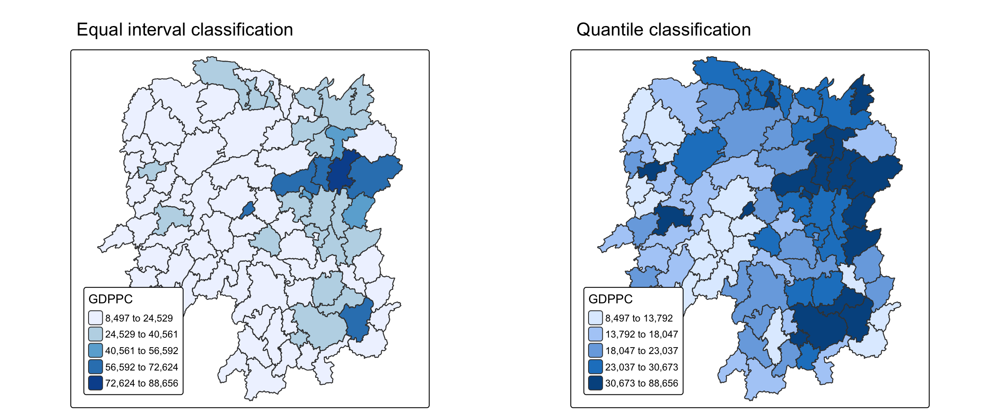
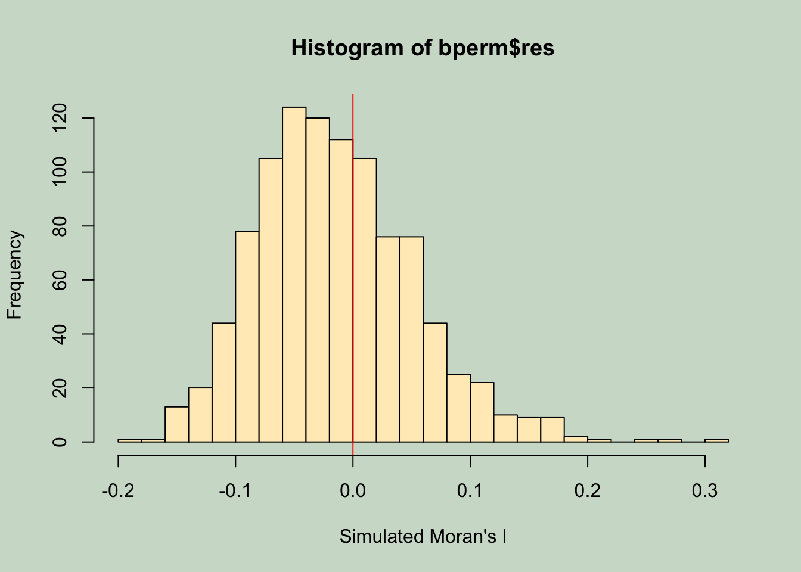
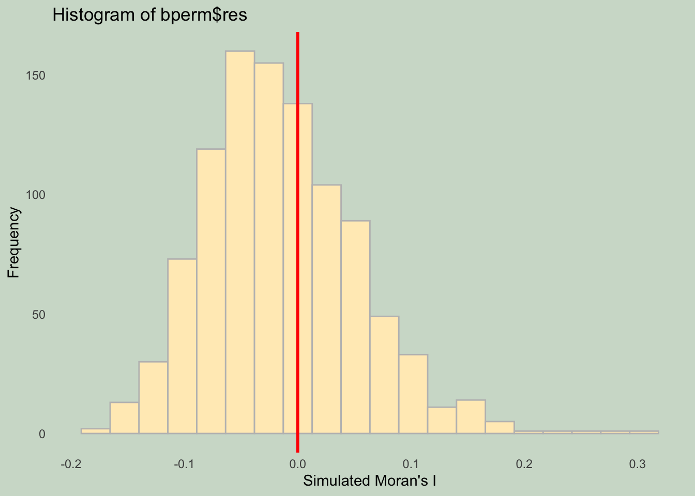
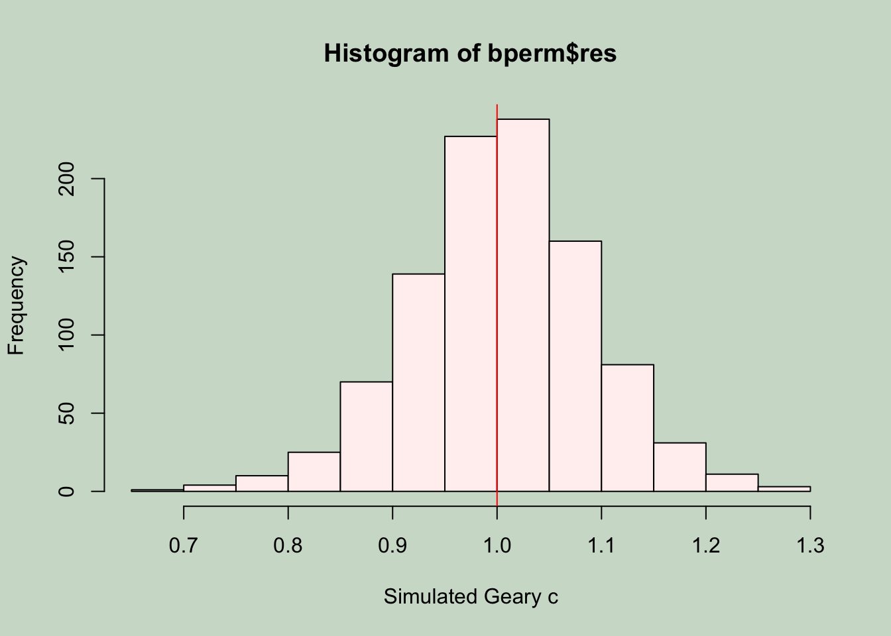
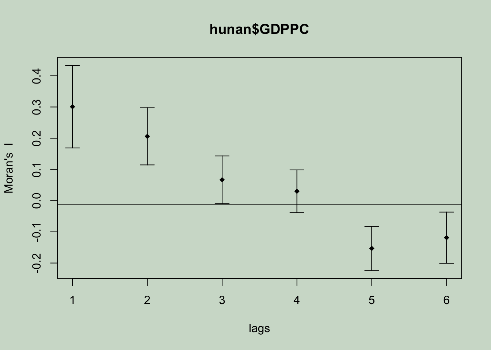
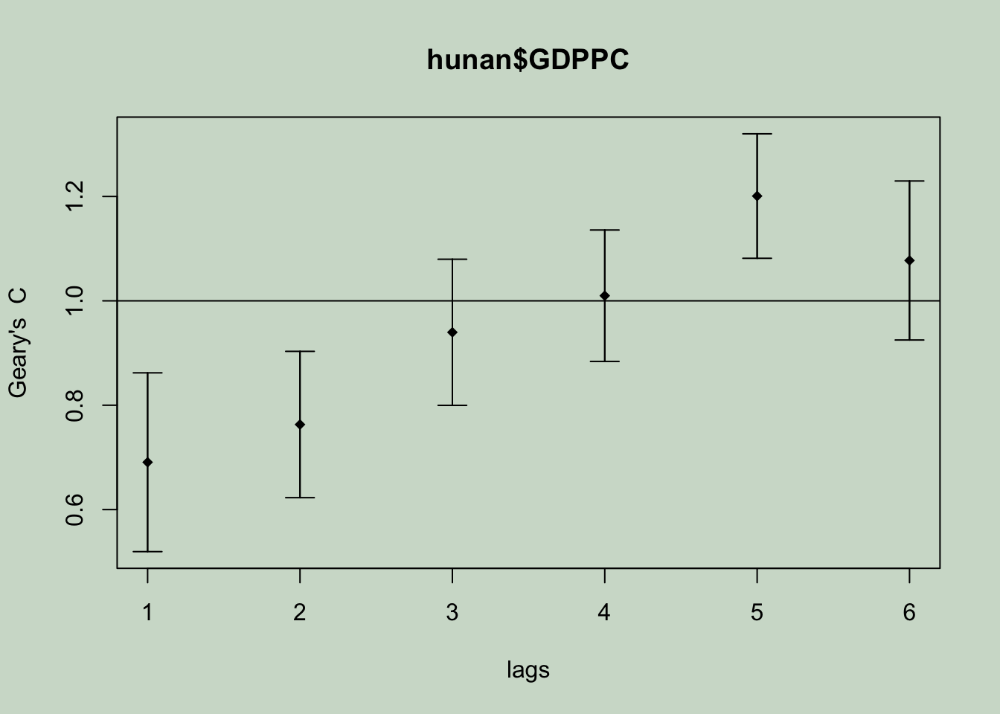

pacman::p_load(sf, tidyverse, spdep, tmap)05 - Global Measures of Spatial Autocorrelation
1 Overview
We will learn to compute Global Measures of Spatial Autocorrelation (GMSA) by using spdep package. We will do the following in this hands-on exercise. - import geospatial data using appropriate function(s) of sf package - import csv file using appropriate function of readr package - perform relational join using appropriate join function of dplyr package - compute Global Spatial Autocorrelation (GSA) statistics using appropriate functions of spdep package, plot Moran scatterplot - compute and plot spatial correlogram using appropriate function of spdep package - provide statistically correct interpretation of GSA statistics.
2 Getting started
2.1 The analytical question
Generally spatial policies would have development objectives from local government and planners to ensure equal distribution of development in the province, taking China for an example. Our task in this study, hence, is to apply appropriate spatial statistical methods to discover if development are evenly distributed geographically. If the answer is No. Then, our next question will be “is there sign of spatial clustering?”. And, if the answer for this question is yes, then our next question will be “where are these clusters?”
In this case study, we will use China’s data to examine the spatial pattern of a selected development indicator (i.e. GDP per capita) of Hunan Provice.
2.2 Setting the Analytical Toolls
We will use the following packages: spdep, sf, tmap and tidyverse packages of R.
| Package | Description |
|---|---|
| sf | importing and handling geospatial data in R |
| tidyverse | wrangling attribute data in R |
| spdep | computing spatial weights, global and local spatial autocorrelation statistics |
| tmap | preparing cartographic quality chropleth map |
3 The data
3.1 The Study Area and Data
Two data sets will be used in this hands-on exercise, they are:
- Hunan province administrative boundary layer at county level: This is a geospatial data set in ESRI shapefile format.
- Hunan_2012.csv: This csv file contains selected Hunan’s local development indicators in 2012.
We will bring a geospatial data and its associated attribute table into R environment. The geospatial data is in ESRI shapefile format and the attribute table is in csv fomat.
3.2 Import shapefile into R environment
The code chunk below uses st_read() of sf package to import Hunan shapefile into R. The imported shapefile will be simple features Object of sf.
hunan <- st_read(dsn = "data/geospatial", layer = "Hunan")Reading layer `Hunan' from data source
`/Users/cathyc/Documents/cathyschu/ISSS626GEO/Hands-on_Ex/Hands-on_Ex05/data/geospatial'
using driver `ESRI Shapefile'
Simple feature collection with 88 features and 7 fields
Geometry type: POLYGON
Dimension: XY
Bounding box: xmin: 108.7831 ymin: 24.6342 xmax: 114.2544 ymax: 30.12812
Geodetic CRS: WGS 843.3 Import csv file into R environment
Next, we will import Hunan_2012.csv into R by using read_csv() of readr package. The output is R data frame class.
hunan2012 <- read_csv("data/aspatial/Hunan_2012.csv")3.4 Performing relational join
Below we will update the attribute table of hunan’s SpatialPolygonsDataFrame with the attribute fields of hunan2012 dataframe. This is performed using left_join() of dplyr package.
hunan <- left_join(hunan, hunan2012) %>%
dplyr::select(1:4, 7, 15)3.5 Visualising Regional Development Indicator
Now, we are going to prepare a basemap and a choropleth map showing the distribution of GDPPC 2012 using qtm() of tmap package.
equal <- tm_shape(hunan) +
tm_polygons(fill = "GDPPC",
fill.scale = tm_scale_intervals(
style = "equal",
n = 5,
values = "brewer.blues")) +
tm_borders(fiil_alpha = 0.5) +
tm_layout(legend.position = c("left", "bottom"),
main.title = "Equal interval classification")
quantile <- tm_shape(hunan) +
tm_polygons(fill = "GDPPC",
fill.scale = tm_scale_intervals(
style = "quantile",
n = 5)) +
tm_borders(fiil_alpha = 0.5) +
tm_layout(legend.position = c("left", "bottom"),
main.title = "Quantile classification")
tmap_arrange(equal,
quantile,
asp=1,
ncol=2)
4 Global Measures of Spatial Autocorrelation
In this section, we will compute global spatial autocorrelation statistics and to perform spatial complete randomness test for global spatial autocorrelation.
4.1 Computing Contiguity Spatial Weights
Before we can compute the global spatial autocorrelation statistics, we need to construct a spatial weights of the study area. The spatial weights is used to define the neighbourhood relationships between the geographical units (i.e. county) in the study area.
In the code chunk below, poly2nb() of spdep package is used to compute contiguity weight matrices for the study area. This function builds a neighbours list based on regions with contiguous boundaries.
More specifically, the code chunk below is used to compute Queen contiguity weight matrix.
wm_q <- poly2nb(hunan, queen = TRUE)
summary(wm_q)Neighbour list object:
Number of regions: 88
Number of nonzero links: 448
Percentage nonzero weights: 5.785124
Average number of links: 5.090909
Link number distribution:
1 2 3 4 5 6 7 8 9 11
2 2 12 16 24 14 11 4 2 1
2 least connected regions:
30 65 with 1 link
1 most connected region:
85 with 11 linksNote
The summary report above shows that there are 88 area units in Hunan. The most connected area unit has 11 neighbours. There are two area units with only one neighbours.
4.2 Row-standardised weights matrix
This step is about creating a spatial lag, which is a value that summarises the variable (like income) across a central area’s immediate neighbors. The method chosen is to assign an equal weight to every neighboring area, known as style=“W” (Row-Standardized Weights).
The weight for each neighbor is calculated simply as the fraction (/1number of neighbors). For example, if a county has four neighbors, each one is assigned a weight of 0.25. The final spatial lag is then computed by multiplying each neighbor’s income value by this weight and summing the products. The primary appeal of this approach is that it is the most intuitive and easiest way to summarize the surrounding values.
The significant limitation of using the equal-weight style=“W” is the “edge effect.” Areas located along the boundaries of the study region naturally have fewer neighbors than those in the center.
When a polygon has fewer neighbors, those few neighbors receive a disproportionately large weight. This causes the calculated spatial lag for the boundary area to be heavily influenced by a limited sample of surrounding data, which may over or under-estimate the true underlying spatial pattern (spatial autocorrelation). Although this drawback exists, we use style=“W” for its simplicity in this example. More robust alternative options—such as style=“B” (Binary Weights) are available for more serious spatial analysis.
rswm_q <- nb2listw(wm_q, style = "W", zero.policy = TRUE)
rswm_qCharacteristics of weights list object:
Neighbour list object:
Number of regions: 88
Number of nonzero links: 448
Percentage nonzero weights: 5.785124
Average number of links: 5.090909
Weights style: W
Weights constants summary:
n nn S0 S1 S2
W 88 7744 88 37.86334 365.9147Learning
The input of
nb2listw()must be an object of class nb. The syntax of the function has two major arguments, namely style and zero.poly.style can take values “W”, “B”, “C”, “U”, “minmax” and “S”.
B is the basic binary coding
W is row standardised (sums over all links to n)
C is globally standardised (sums over all links to n)
U is equal to C divided by the number of neighbours (sums over all links to unity)
S is the variance-stabilizing coding scheme proposed by Tiefelsdorf et al. 1999, p. 167-168 (sums over all links to n)
If zero policy is set to TRUE, weights vectors of zero length are inserted for regions without neighbour in the neighbours list. These will in turn generate lag values of zero, equivalent to the sum of products of the zero row t(rep(0, length=length(neighbours))) %*% x, for arbitrary numerical vector x of length length(neighbours). The spatially lagged value of x for the zero-neighbour region will then be zero, which may (or may not) be a sensible choice.
5 Global Measures of Spatial Autocorrelation: Moran’s I
We will perform Moran’s I statistics testing by using moran.test() of spdep.
Below we will performs Moran’s I statistical testing using moran.test() of spdep.
moran.test(hunan$GDPPC, listw = rswm_q,
zero.policy = TRUE, na.action = na.omit)
Moran I test under randomisation
data: hunan$GDPPC
weights: rswm_q
Moran I statistic standard deviate = 4.7351, p-value = 1.095e-06
alternative hypothesis: greater
sample estimates:
Moran I statistic Expectation Variance
0.300749970 -0.011494253 0.004348351 Analysis
There is statistically significant positive spatial autocorrelation in GDPPC across Hunan province. - p-value = 1.095e-06 is well below any conventional significance level (0.001, 0.01, 0.05) - Z-score = 4.74 indicates the observed Moran’s I is 4.74 standard deviations above what would be expected under spatial randomness. - This provides very strong evidence to reject the null hypothesis of spatial randomness - Moran’s I score 0.300749970 shows moderate positive spatial clustering. Areas with similar GDPPC tend to cluster together, but it’s not an extremely strong pattern.
Let’s perform permutation test for Moran’s I statistic using moran.mc() of spdep. A total of 1000 simulation will be performed.
set.seed(1234)
bperm= moran.mc(hunan$GDPPC,
listw=rswm_q,
nsim=999,
zero.policy = TRUE,
na.action=na.omit)
bperm
Monte-Carlo simulation of Moran I
data: hunan$GDPPC
weights: rswm_q
number of simulations + 1: 1000
statistic = 0.30075, observed rank = 1000, p-value = 0.001
alternative hypothesis: greaterAnalysis
There is statistically significant positive spatial autocorrelation in GDP per capita across Hunan province. - p-value = 0.001 indicates strong statistical significance - Observed rank = 1000 means observed Moran’s I value was the highest among all 1000 values. This means none of the 999 random permutations produced a Moran’s I value as high as the observed value. - Moran’s I = 0.30075 confirms moderate positive spatial autocorrelation. Areas with similar GDP per capita are significantly clustered together geographically.
To examine the simulated Moran’s test statistics in greater detail, we can plot the distribution of the statistical values as a histogram. Below we will use hist() and abline() of R Graphics.
mean(bperm$res[1:999])[1] -0.01504572var(bperm$res[1:999])[1] 0.004371574summary(bperm$res[1:999]) Min. 1st Qu. Median Mean 3rd Qu. Max.
-0.18339 -0.06168 -0.02125 -0.01505 0.02611 0.27593 Plot histogram
par(bg = "#D0DDD0")
hist(bperm$res, freq=TRUE,
breaks=20, xlab="Simulated Moran's I",
col="#FFECC0")
abline(v=0, col="red") 
ggplot2
ggplot(data.frame(res = bperm$res), aes(x = res)) +
geom_histogram(bins = 20,
fill = "#FFECC0",
color = "grey",
boundary = 0) +
geom_vline(xintercept = 0, color = "red", size = 1) +
labs(x = "Simulated Moran's I",
y = "Frequency",
title = "Histogram of bperm$res") +
theme_minimal() +
theme(
plot.background = element_rect(fill = "#D0DDD0", color = NA),
panel.background = element_rect(fill = "#D0DDD0", color = NA),
panel.grid = element_blank()
)
Analysis
- This histogram displays exhibits an approximately normal distribution with slight positive skewness centered near -0.05. The distribution demonstrates the expected range of Moran’s I values under the null hypothesis of spatial randomness, with the majority of simulated statistics falling within the interval [-0.15, +0.05].
- The observed test statistic of 0.301 represents an extreme outlier, positioned far beyond the upper tail of this reference distribution. This extreme positioning validates the Monte Carlo p-value of 0.001 and confirms statistically significant positive spatial autocorrelation at α = 0.001.
- The evidence strongly rejects the null hypothesis of spatial independence, indicating that the observed spatial clustering of GDPPC substantially exceeds what would be expected under random spatial arrangements.
6 Global Measures of Spatial Autocorrelation: Geary’s C
We will perform Geary’s C statistics testing by using appropriate functions of spdep package.
We will perform Geary’s C test for spatial autocorrelation by using geary.test() of spdep.
geary.test(hunan$GDPPC, listw=rswm_q)
Geary C test under randomisation
data: hunan$GDPPC
weights: rswm_q
Geary C statistic standard deviate = 3.6108, p-value = 0.0001526
alternative hypothesis: Expectation greater than statistic
sample estimates:
Geary C statistic Expectation Variance
0.6907223 1.0000000 0.0073364 Analysis
- The Geary C statistic = 0.691 is substantially below the expected value of 1.000 under spatial randomness, with a highly significant p-value = 0.0001526 (α < 0.001). The standardized test statistic = 3.61 indicates the observed value is 3.61 standard deviations below the null expectation, providing strong statistical evidence to reject the null hypothesis of spatial independence.
- These results from both global spatial autocorrelation statistics provide robust evidence that GDPPC in Hunan province exhibits significant spatial clustering, and confirms the presence of regional economic spillover effects.
We will perform permutation test for Geary’s C statistic using geary.mc() of spdep.
set.seed(1234)
bperm=geary.mc(hunan$GDPPC,
listw=rswm_q,
nsim=999)
bperm
Monte-Carlo simulation of Geary C
data: hunan$GDPPC
weights: rswm_q
number of simulations + 1: 1000
statistic = 0.69072, observed rank = 1, p-value = 0.001
alternative hypothesis: greaterAnalysis
The observed Geary C statistic = 0.69072 achieved an observed rank = 1 out of 1000, indicating it was the lowest value among all simulations. This extreme ranking confirms that none of the 999 random permutations produced a Geary’s C value as low as the observed data, so yields a p-value = 0.001 and provides very strong statistical evidence against the null hypothesis of spatial randomness.
Finally we will plot the simulated values to show the distribution in a histogram.
mean(bperm$res[1:999])[1] 1.004402var(bperm$res[1:999])[1] 0.007436493summary(bperm$res[1:999]) Min. 1st Qu. Median Mean 3rd Qu. Max.
0.7142 0.9502 1.0052 1.0044 1.0595 1.2722 par(bg = "#D0DDD0")
hist(bperm$res, freq=TRUE,
breaks=20, xlab="Simulated Geary c",
col="#FFF1F1")
abline(v=1, col="red") 
Analysis
- The distribution appears approximately normal, which is expected for Geary’s C under the null hypothesis of spatial randomness. The distribution is centered around 1.0, which corresponds to the theoretical expectation of Geary’s C = 1.0 under spatial independence.
- The observed Geary C statistic = 0.69072 would fall far to the left of this entire distribution, well beyond the left tail. The histogram validates the p-value = 0.001 by demonstrating that values below 0.7 are virtually non-existent under spatial randomness.
- This visualisation confirms the exceptionally strong statistical significance of the spatial autocorrelation detected in Hunan’s GDPPC data, as the observed spatial clustering is far more extreme than what random spatial arrangements would produce.
7 Spatial Correlogram
Spatial correlograms are great to examine patterns of spatial autocorrelation in your data or model residuals. They show how correlated are pairs of spatial observations when you increase the distance (lag) between them . They are plots of some index of autocorrelation (Moran’s I or Geary’s c) against distance. Although correlograms are not as fundamental as variograms (a keystone concept of geostatistics), they are very useful as an exploratory and descriptive tool. For this purpose they actually provide richer information than variograms.
7.1 Computing Moran’s I correlogram
Below sp.correlogram() of spdep package is used to compute a 6-lag spatial correlogram of GDPPC. The global spatial autocorrelation used in Moran’s I. The plot() of base Graph is then used to plot the output.
par(bg = "#D0DDD0")
MI_corr <- sp.correlogram(wm_q,
hunan$GDPPC,
order=6, method="I", style="W")
plot(MI_corr,
col.main = "#B95E82")
Not all autocorrelation values are statistically significant, so the plot might not allow us to provide complete interpretation. It is important for us to examine the full analysis report by printing out the analysis results.
print(MI_corr)Spatial correlogram for hunan$GDPPC
method: Moran's I
estimate expectation variance standard deviate Pr(I) two sided
1 (88) 0.3007500 -0.0114943 0.0043484 4.7351 2.189e-06 ***
2 (88) 0.2060084 -0.0114943 0.0020962 4.7505 2.029e-06 ***
3 (88) 0.0668273 -0.0114943 0.0014602 2.0496 0.040400 *
4 (88) 0.0299470 -0.0114943 0.0011717 1.2107 0.226015
5 (88) -0.1530471 -0.0114943 0.0012440 -4.0134 5.984e-05 ***
6 (88) -0.1187070 -0.0114943 0.0016791 -2.6164 0.008886 **
---
Signif. codes: 0 '***' 0.001 '**' 0.01 '*' 0.05 '.' 0.1 ' ' 1Analysis
- Lag 1 (0.301, p < 0.001) with very strong positive spatial autocorrelation indicates that neighboring areas have very similar GDPPC values; lag 2 (0.206, p < 0.001) with moderately strong positive autocorrelation extends to second-order neighbors; lag 3 (0.067, p < 0.05) with weak but significant positive autocorrelation at third-order neighbors.
- The significant positive autocorrelation at lags 1-3 confirms that areas with similar GDPPC are spatially clustered together.
- The pattern suggests high GDPPC areas are clustered together (positive autocorrelation at short distances). In addition, these prosperous clusters are surrounded by areas with lower GDPPC (negative autocorrelation at medium distances).
- With 5 out of 6 lags showing significant results, there is strong evidence of non-random spatial distribution of economic development in Hunan province.
7.2 Computing Geary’s C correlogram and plot
In the code chunk below, sp.correlogram() of spdep package is used to compute a 6-lag spatial correlogram of GDPPC. The global spatial autocorrelation used in Geary’s C. The plot() of base Graph is then used to plot the output.
par(bg = "#D0DDD0")
GC_corr <- sp.correlogram(wm_q,
hunan$GDPPC,
order=6,
method="C",
style="W")
plot(GC_corr)
Similar to the previous step, we will print out the analysis report by using the code chunk below.
print(GC_corr)Spatial correlogram for hunan$GDPPC
method: Geary's C
estimate expectation variance standard deviate Pr(I) two sided
1 (88) 0.6907223 1.0000000 0.0073364 -3.6108 0.0003052 ***
2 (88) 0.7630197 1.0000000 0.0049126 -3.3811 0.0007220 ***
3 (88) 0.9397299 1.0000000 0.0049005 -0.8610 0.3892612
4 (88) 1.0098462 1.0000000 0.0039631 0.1564 0.8757128
5 (88) 1.2008204 1.0000000 0.0035568 3.3673 0.0007592 ***
6 (88) 1.0773386 1.0000000 0.0058042 1.0151 0.3100407
---
Signif. codes: 0 '***' 0.001 '**' 0.01 '*' 0.05 '.' 0.1 ' ' 1Analysis
- The result shows strong postive spatial autocorrelation at short distances - Lag 1: C = 0.691, p < 0.001; Lag 2: C = 0.763, p < 0.001
- Between lag 3-4 there is no significant spatial autocorrelatio - C ≈ 1, p > 0.05
- For long distance, it shows significant negative spatial autocorrelation - Lag 5: C = 1.201, p < 0.001
- The Geary’s C results strongly corroborate the Moran’s I findings, providing robust evidence for the spatial autocorrelation pattern.
- The significant positive autocorrelation at short distances confirms that areas with similar GDPPC values are geographically clustered together. The transition from positive to negative autocorrelation suggests a core-periphery economic geography where the economic centers (high GDPPC) cluster together, and these centers are spatially separated from lower GDPPC areas.
Class Note: Spatial autocorrelation is an extention of geographycal summary statistics. It looks at only 1 variable and its relations with the surrounding areas.